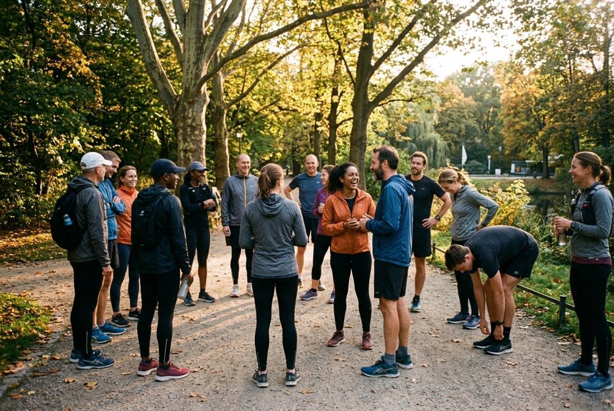
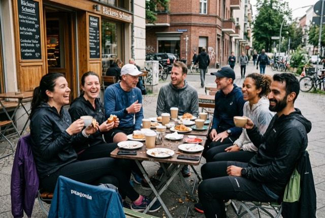
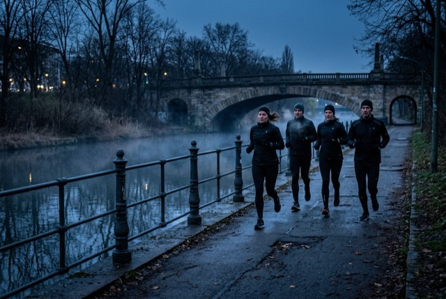

Run for fun
Four runs a week. No coach, no fees, no set pace.
We are a free, English-speaking running club in Berlin. Turn up to any session and run with us — there is nothing to sign and nothing to pay.

We have been running together since 2021 and are now a registered, charitable association. None of that changed the runs. They are still uncoached, still free, and we still adapt to whoever shows up on the day.
Everyone is welcome, at every pace. If you have ever hesitated at the edge of a running group because you thought you would be the slowest one there, this is the club for you — on the Monday run there is no set pace at all.
The schedule
Where to find us
Every run is open to everyone, members and first-timers alike. Each one ends somewhere with food or a drink, which is at least half the point.
Please note. Our runs are an informal invitation to run together — they are not organised events of the club and not coached or supervised sessions. There is no registration and no fee. Everyone takes part on their own responsibility and is asked to judge their own fitness and health. We run on public roads and paths, where the normal traffic rules apply and each runner is responsible for their own conduct. Guests who are not members of Berlin Harriers e.V. are not covered by the club's sports insurance.
Six hundred and thirty-seven of us log our runs together on Strava. It is the easiest way to see what the club is actually doing between sessions.
Season record
Where we have raced
We enter races together rather than as individuals. Most of the time the number that matters is how many of us turned up.
12 AprBerlin Half Marathon14 ran
25 MayTeufelsberg Mile2nd
14 SepCopenhagen Half Marathon6 ran
This week
11 OctBerlin MarathonJoin us
23 NovCross-country, GrunewaldJoin us
Come and run with us
Free, no registration, every pace. The next one is Monday at 18:30, east of the Siegessäule in the Tiergarten. Just come along.
Joining
You never have to become a member to run with us, and membership itself is free — no fees, no dues. Members get a vote at our meetings and a place on the trips and socials. Applying takes about two minutes and means signing our code of conduct.
If you were at our founding meeting, you are already a member and there is nothing for you to do.


The club
Discord is where the week actually happens — where the Tuesday Track location is posted and where people find someone to run with. It is also the club's living room, with side channels for everything from Berlin events to asparagus appreciation. We keep politics out of it; asparagus is about as divisive as we get.
Questions
Things people ask
The short answers. Anything else, ask in Discord.
Am I fast enough?
Placeholder answer. A sentence or two on how the runs cater for every pace and nobody is left behind.
Do I need to speak German?
Placeholder answer. A sentence or two on the club being English-speaking and who tends to turn up.
What if I am new to running?
Placeholder answer. A sentence or two on which run suits a beginner best.
Where do I leave my bag?
Placeholder answer. A sentence or two on lockers, bag drops or carrying nothing.
Do runs go ahead in bad weather?
Placeholder answer. A sentence or two on rain, snow and where cancellations are posted.